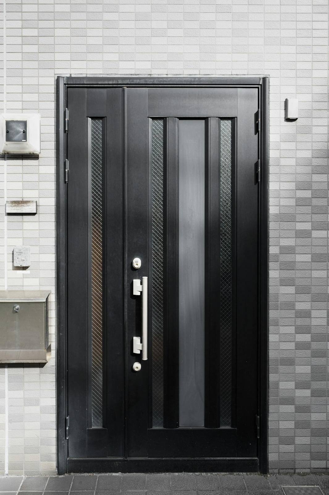
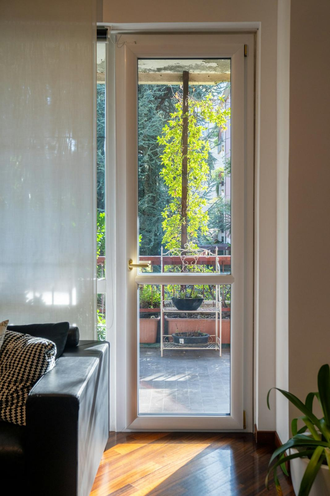
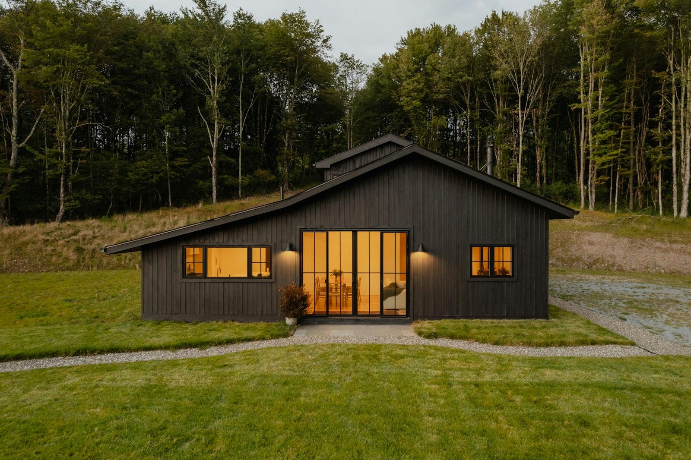
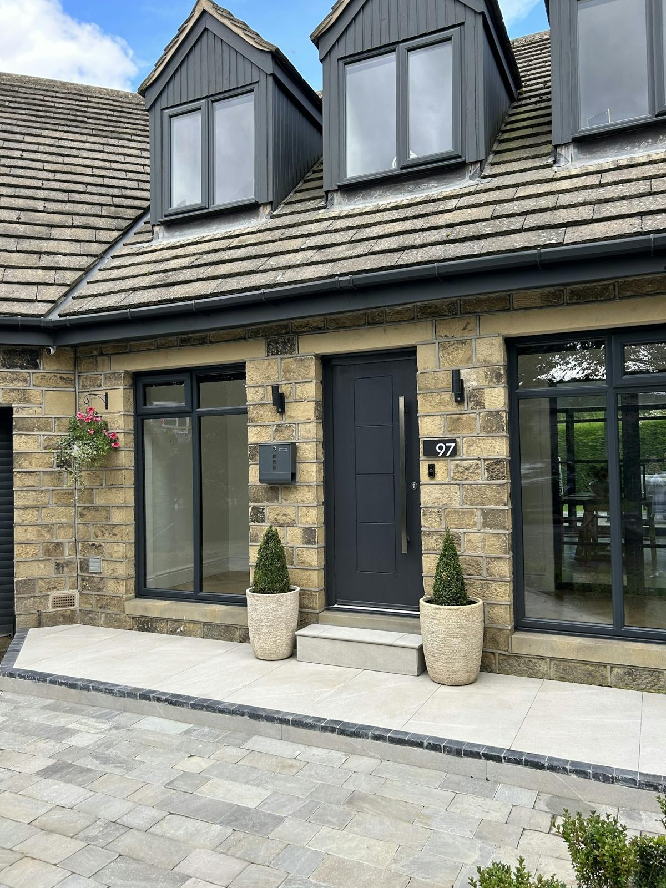

Spoedreparatie aan kunststof kozijnen
Dit lossen wij op, waar mogelijk dezelfde dag nog. Bel of app, dan hoort u direct wanneer wij kunnen komen.
- 01
Raam of deur sluit niet
Klemt, sleept of valt niet meer in het slot. Wij stellen af of vervangen het beslag.
- 02
Kapot slot of cilinder
Sleutel draait niet of de deur gaat niet op slot. Wij vervangen slot, cilinder of meerpuntssluiting.
- 03
Gebroken of lek glas
Ruit gebarsten of condens tussen het glas. Wij maken het dicht en plaatsen nieuw glas.
- 04
Tocht of lekkage
Versleten rubbers, kieren of water bij regen. Wij vervangen de rubbers en dichten af.
- 05
Defecte greep of scharnier
Greep los, raam hangt scheef of blijft op kiepstand hangen. Wij maken het weer soepel.
- 06
Schade na inbraak
Wij maken uw woning direct weer afsluitbaar en herstellen kozijn, glas en beslag.
Zo werkt een spoedreparatie
- Stap 1
Bel of app een foto
U vertelt wat er aan de hand is. Met een foto weten wij direct welk onderdeel nodig is.
- Stap 2
Wij komen langs
Waar mogelijk dezelfde dag nog. U hoort vooraf wanneer wij er zijn en wat het kost.
- Stap 3
Verholpen
Meestal is het in één bezoek klaar. Is er een onderdeel nodig, dan maken wij het eerst veilig en dicht.
Eén adres voor alles rond uw kozijnen
Van één raam dat klemt tot een compleet nieuwe gevel: u belt één nummer.

Alles in kunststof, van raam tot gevelbekleding
Onderhoudsarm, goed isolerend en in elke kleur. Eén adres voor de hele gevel, inclusief gevelbekleding van Keralit.
 Kozijnen en ramen
Vast, draaiend of kiepend, in elke maat en indeling.
Kozijnen en ramen
Vast, draaiend of kiepend, in elke maat en indeling.
 Draai-kiepramen
Op kiepstand ventileren, wijd open om te luchten.
Draai-kiepramen
Op kiepstand ventileren, wijd open om te luchten.

Voordeuren Stevig, goed isolerend en in de stijl van uw woning.
Achterdeuren Veel licht, goed afsluitbaar en onderhoudsarm. Schuifpuien
Grote glasvlakken die licht lopen en strak sluiten.
Schuifpuien
Grote glasvlakken die licht lopen en strak sluiten.
 Tuindeuren
Dubbel openslaand, zo loopt u de tuin in.
Tuindeuren
Dubbel openslaand, zo loopt u de tuin in.

Gevelbekleding (Keralit) Onderhoudsarme kunststof gevelbekleding voor gevel, dakrand en boeidelen. Hang- en sluitwerk Grepen, scharnieren en sloten die soepel blijven.Een kozijn is pas goed als u er nooit meer aan hoeft te denken. Daarom meten wij zelf in, monteren wij zelf en komen wij zelf terug als er iets is.

Stel uw kozijn samen
Kies type, maten en kleur. Draai het kozijn rond, zet het open en stuur uw hele aanvraag in één keer door.
De samensteller wordt geladen. Lukt dat niet? Vraag direct een offerte aan.
Nieuwe kozijnen: van eerste contact tot oplevering
Vijf stappen, met bij elke stap hoe lang het duurt. Zo weet u vooraf waar u aan toe bent.
-
1Vandaag nog
Contact
Bel, app of vul het formulier in. U krijgt dezelfde werkdag een reactie.
-
2Binnen 1 week
Inmeten aan huis
Wij komen langs, meten alles op en nemen kleurstalen mee. Gratis en vrijblijvend.
-
3Binnen 2 werkdagen
Offerte met vaste prijs
Eén heldere offerte, inclusief montage en afvoer. Geen verrassingen achteraf.
-
46 tot 8 weken
Productie op maat
Uw kozijnen worden op maat gemaakt. Ondertussen plannen wij samen de montagedag.
-
1 tot 3 dagen
Montage en oplevering
Wij plaatsen, werken af en voeren de oude kozijnen af. Samen lopen wij alles na.
Recent opgeleverd
Veeg of scrol opzij voor meer projecten


Goed om te weten
Staat uw vraag er niet bij? Bel gerust, wij denken graag mee.
Wat kost een nieuw kunststof kozijn?
Dat hangt af van de maat, het type, de kleur en het glas. Na het inmeten ontvangt u een offerte met een vaste prijs, inclusief montage en afvoer van de oude kozijnen.
Hoe lang duurt het plaatsen?
De levertijd is ongeveer 6 tot 8 weken na akkoord. De montage zelf duurt gemiddeld 1 tot 3 dagen, afhankelijk van het aantal kozijnen.
Hoe snel komen jullie voor een reparatie?
Bij spoed komen wij waar mogelijk dezelfde dag nog. Sluit een raam of deur niet meer, of is er glas gebroken? Bel dan direct of app een foto. Voor reparaties zonder haast maken wij een afspraak die u past.
Repareren jullie ook kozijnen van een andere leverancier?
Ja. Wij repareren kozijnen van vrijwel alle merken en systemen, ook als wij ze niet zelf hebben geplaatst.
Hoe vaak is onderhoud nodig?
Kunststof is onderhoudsarm, niet onderhoudsvrij. Wij adviseren elke twee jaar een controle waarbij wij beslag smeren, ramen afstellen en rubbers nalopen.
Spoed of offerte, wij reageren snel
Bij spoed belt of appt u het snelst. Een offerte voor nieuwe kozijnen ontvangt u binnen 2 werkdagen.
Bereikbaar: ma t/m vr 8.00 – 17.30 uur